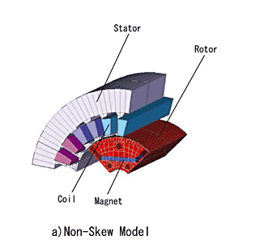

Ref : http://blog.naver.com/hyunkag?Redirect=Log&logNo=80016624870
http://kin.naver.com/detail/detail.php?d1id=11&dir_id=110202&eid=TbWi6NJPMI8HaDT7ps5eCj2/ruSicUwt&qb=Y29nZ2luZw==
여러가지로 설명이 가능할 텐데요...우선, 직관적인 관점에서 보면,영구자석이 사용된 모터를 전원연결이 안된상태에서 손으로 축을 돌리면 대개 '도르륵 도르륵..'하는 소리가 들리거나 느낌으로 올 것입니다. 바로 이 현상을 일으키는 축 방향 토크성분이 코깅토크이지요. 이 성분은 +와 -를 반복하는 성분이라 에너지를 소모하지는 않지만, 모터의 품질을 결정하는 요소가 될 수 있습니다. 물론 저품질의 베아링에 의한 소음도 있을 수 있으나, 이것은 제외하고 설명한 것입니다. 아주 큰 영구자석 모터를 돌려보면 코깅 토크를 확실히 느껴보실 수 있을 것입니다.이는 또한, 기본적으로 회전자에 붙어 있는 자석과 공극 반대편에 있는 요철(凹凸)이 있는 슬롯구조에서 비롯되는 현상입니다. 자석이 쇠를 당기는 현상을 말하는 것인데, 자석이 쇠를 당길때(움직일때)는 자계 시스템 밖으로 운동 에너지등을 공급하는 식으로 볼 수 있고, 쇠를 자석으로 부터 떼어 낼 때는 밖에서 자계시스템으로 에너지를 공급하는 것으로 보시면 되지요. 결국, 가까이 갈때와 멀어질 때의 에너지 주고 받음이 코깅 토크라는 현상으로 나타나는 것입니다.
코깅은 우리가 모터의 Shaft(축)을 잡고 천천히 돌렸을 경우 부드럽게 돌아가지않고 약간 '떡떡'하면서 불균일하게 돌게 되는데 이 것을 흔히 코깅이라고 합니다.
업계에서는 모터를 외부에서 1~4 rpm으로 돌리면서 이때 `바퀴동안 느껴지는 토오크의 변화량 중 가장 클때와 가장 작을때의 차이를 코깅토오크로 정의하여 사용하고 있습니다.
이 코깅이 크면(일반적으로 코깅이 큰 모터일수록 출력이 큽니다.) 모터를 구동할때 토오크 Ripple이 커저 모터를 제어하기가 쉽지 않습니다.
업계에서는 모터를 외부에서 1~4 rpm으로 돌리면서 이때 `바퀴동안 느껴지는 토오크의 변화량 중 가장 클때와 가장 작을때의 차이를 코깅토오크로 정의하여 사용하고 있습니다.
이 코깅이 크면(일반적으로 코깅이 큰 모터일수록 출력이 큽니다.) 모터를 구동할때 토오크 Ripple이 커저 모터를 제어하기가 쉽지 않습니다.